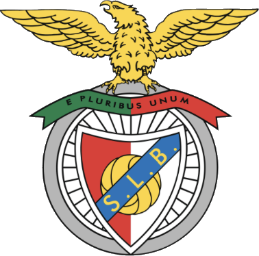

Mário Coluna
Mittelfeld · 1954–1970
Der legendäre Kapitän der goldenen Generation, die zweimal den Europapokal holte.
Sport Lisboa e Benfica · seit 1904

Portugals Rekordmeister, zweifacher Europapokalsieger und ein Verein, der für Millionen Menschen mehr ist als Fußball.
Nächstes Spiel
Das Neueste rund um die Adler – in eigenen Worten zusammengefasst, mit Link zum Originalartikel.
Klick auf ein Jahr, um mehr zu erfahren.
O Pantera Negra · 1942–2014
Der „Schwarze Panther“ kam 1960 aus Mosambik nach Lissabon und wurde zum größten Spieler der Vereinsgeschichte. Mit seiner Schnelligkeit und seinem gewaltigen Schuss prägte er eine ganze Ära. Vor dem Estádio da Luz erinnert eine Statue an ihn, seit 2015 ruht er im Nationalpantheon in Lissabon.
Klick auf einen Pokal. Stand: Sommer 2026.
Das „Stadion des Lichts“ ist die Heimat von Benfica und eines der größten Stadien Portugals. Hier fanden unter anderem das EM-Finale 2004 und das Champions-League-Finale 2014 statt.
Vor vielen Heimspielen kreist ein echter Adler durch das Stadion und landet anschließend auf dem Vereinswappen. Für viele Fans ist das der emotionalste Moment des Spieltags.
Mittelfeld · 1954–1970
Der legendäre Kapitän der goldenen Generation, die zweimal den Europapokal holte.
Stürmer · 1950–1963
Torjäger und Kapitän beim ersten Europapokalsieg 1961.
Mittelfeld · aus der eigenen Jugend
Eleganter Spielmacher, der nach Jahren in Italien zu seinem Herzensverein zurückkehrte.
Aus vielen wird eins: „E Pluribus Unum“ ist das Motto des Vereins.
Der Adler steht für Stärke und Unabhängigkeit und ist das Symbol des Vereins.
„Die Roten“: Spitzname wegen der traditionellen roten Trikots.
Fanclubs („Casas do Benfica“) gibt es in Portugal und auf der ganzen Welt, auch in Deutschland.
Wie gut kennst du die Adler?
Trainer: Marco Silva · Stand: Herbst 2026